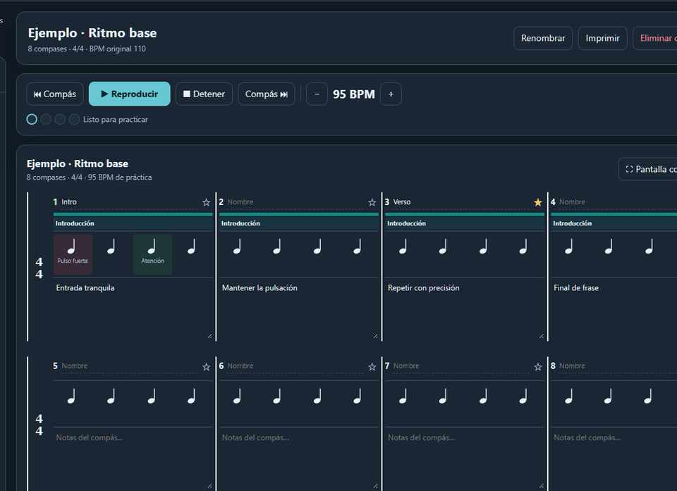

Biblioteca y repertorios
Consulta, filtrado y agrupación de canciones en repertorios.
Consultar función →Procedimientos para la organización de repertorios, definición de estructuras musicales por compases, ejecución del metrónomo y registro de sesiones de práctica.
La aplicación organiza la gestión musical mediante un panel de herramientas y un área principal de visualización de compases. En el modo de estudio, el panel lateral se oculta para ampliar la superficie de trabajo.

kernnel-ejemplo.jpg.Consulta, filtrado y agrupación de canciones en repertorios.
Consultar función →Definición de secciones, anotaciones y marcadores de dificultad.
Consultar función →Configuración de pulsación, métrica, intensidad y preparación.
Consultar función →Reproducción de intervalos, repetición y control de visualización.
Consultar función →Seleccione un módulo para consultar su finalidad operativa, parámetros disponibles y secuencia de utilización. Las instrucciones corresponden a funciones verificadas en el código de Kernnel.
Permite generar una entrada de biblioteca con su denominación, cantidad inicial de compases y métrica.
Las métricas admitidas son 2/4, 3/4, 4/4, 6/8, 9/8 y 12/8. La cantidad de compases puede modificarse posteriormente.
Centraliza las canciones registradas y permite delimitar la consulta mediante un filtro de texto o repertorio.
Los repertorios agrupan referencias a canciones de la biblioteca. Su organización es independiente de los compases de cada tema.
Permite modificar la métrica y el tempo de referencia, añadir o retirar compases y definir secciones identificadas mediante colores.
La representación de pulsos no constituye un editor completo de notación musical convencional. La eliminación de un compás incorpora un registro recuperable a la papelera.
Configura el metrónomo asociado a la canción seleccionada, con ajuste independiente de tempo de práctica, volumen y modalidad de sonido.
El motor de audio utiliza Web Audio API. En 6/8, 9/8 y 12/8 se emite un pulso por corchea, con acento en el primer pulso de cada compás.
Define el segmento de la canción que será ejecutado por el metrónomo y administra opciones de seguimiento visual.
La opción «Usar canción completa» restablece el intervalo a la totalidad de compases.
Permite adaptar las condiciones de visualización a las necesidades del usuario y del dispositivo.
Permite generar un respaldo JSON completo, importar archivos compatibles, exportar elementos individuales y recuperar información eliminada.
El almacenamiento del navegador no sustituye un respaldo externo. Conserve una copia JSON independiente del dispositivo.
Permite autenticar una cuenta y transferir una copia manual de la biblioteca a Google Firestore.
La sincronización es manual y no fusiona modificaciones entre dispositivos. La recuperación puede reemplazar los datos locales. Exporte primero un respaldo JSON.
No se encontraron módulos asociados a los términos ingresados.
Acceda a la aplicación mediante un navegador compatible. Utilice su opción de instalación de aplicaciones web cuando esté disponible.
Abra Kernnel en Safari, acceda a Compartir y utilice la opción de añadir a la pantalla de inicio.
Tras una instalación correcta y la descarga inicial de los recursos, las funciones locales pueden seguir operando sin red. La autenticación y los respaldos de Firebase requieren Internet.
La biblioteca local pertenece al almacenamiento del navegador y del origen web correspondiente. No elimine datos de navegación sin disponer de un respaldo verificable.
No. El metrónomo y las herramientas locales pueden funcionar sin Internet cuando los archivos están almacenados en el dispositivo. Firebase requiere conectividad.
No. La transferencia mediante Google Firestore requiere operaciones manuales de guardar y recuperar.
No. Es una representación de pulsos, estructura y anotaciones. No sustituye un editor de notación musical completo.
Exportar previamente un archivo JSON del dispositivo de destino y confirmar qué copia de la biblioteca es la más reciente.